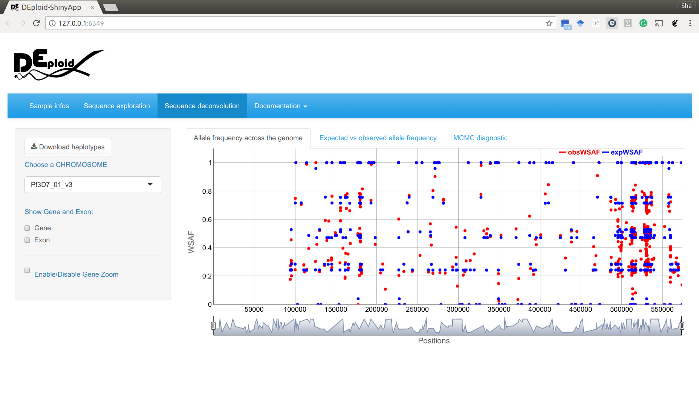

We plot the WSAF along the sequence. Expected and observed WSAF are marked in blue and red respectively. Users can use the navigation buttons to investigate whether mutations occured in genomic regions which are associated with drug resistance.
The deconvoluted haplotypes are also available for download, which can be used for in-depth analysis.
